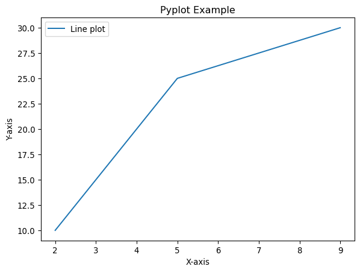
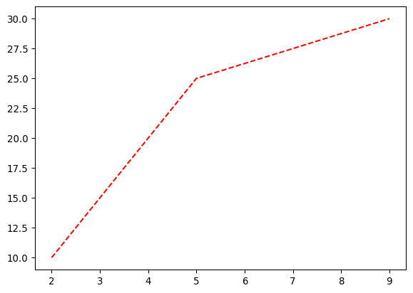
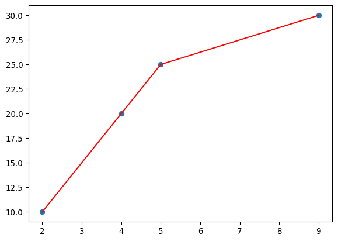
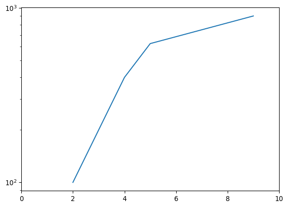

This section introduces Matplotlib, a core Python Package for data visualization.
Matplotlib is a comprehensive Python library for creating static, animated, and interactive visualizations.
Matplotlib an incredibly powerful and customisable visualisation package, and so plays a role of the foundation for many other data visualisation packages (see a comprehensive list of Python visualization libraries from All Tools in PyViz.
10.1 Two Interfaces of Matplotlib
To create a plot, you can use one of two main interfaces:
State-based (pyplot) – quick and MATLAB-like.
Object-oriented (OO) – more explicit and powerful for complex layouts.
10.1.1 Pyplot State-Based Interface
Matplotlib is inspired by MATLAB’s plotting style, which is why the pyplot interface looks very similar to MATLAB commands.
This pyplot style treats matplotlib.pyplot (as plt) like a command-based system. You use commands to call methods (plt.plot, plt.title, etc.) sequentially, and they apply to the current figure and axes that Matplotlib manages internally.
This pyplot style is - Good for quick and simple plots. - But, less flexible when you need multiple subplots or fine-grained customization.
import matplotlib.pyplot as plt# Datax = [2, 4, 5, 9]y = [10, 20, 25, 30]# Example of State-based plottingplt.plot(x, y, label="Line plot") # Add lineplt.xlabel("X-axis") # Add x-labelplt.ylabel("Y-axis") # Add y-labelplt.title("Pyplot Example") # Add titleplt.legend()plt.show()

Tip
matplotlib support raw data in list (numpy.ndarray and pandas.Series & pandas.DataFrame too) unlike some other visualization packages (e.g., seaborn).
Matplotlib returns an object (e.g., <matplotlib.legend.Legend at 0x1e17adb25d0>). To suppress this,
end the command with a semi-colon, ;, or
call plt.show() as the last command.
10.1.2 Object-Oriented (OO) Interface
In the OO style, you explicitly create a Figure and one or more Axes objects, and then call methods on them. This style is closer to how Matplotlib actually works behind the scene, so it can provide more control.
This style is
Good for complex, multi-panel figures, reusable code, fine control.
Slightly more typing (manual coding) required, compared to pyplot.
# Example of object-oriented plottingfig, ax = plt.subplots() # Create figure and axes explicitlyax.plot(x, y, label="Line plot") # Add lineax.set_xlabel("X-axis") # Add x-labelax.set_ylabel("Y-axis") # Add y-labelax.set_title("Object-Oriented Example") # Add titleax.legend()plt.show()
10.2 Pandas and Matplotlib
Pandas handles the data and Matplotlib handles the plotting.
Matplotlib support any array-like data, including Series and DataFrame of pandas.
Pandas has built-in plotting methods that make use of Matplotlib.
Let’s walk through how to use Pandas for Matplotlib step by step, with the following df:
The Series objects can be used for Matplotlib, as one-dim array data. From a DataFrame, you can select/extract two Series data objects and use them for x- and y-axis data, respectively.
# Create a plot using Matplotlib's functionplt.plot(df['x'], df['y']) # Add a lineplt.show()
If a whole DataFrame is used, Matplotlib will return a plot of multiple lines. In the plot, each line is from a column of the DataFrame, while the x-axis is based on the index labels.
plt.plot(df) # Add linesplt.show()
10.2.2Matplotlib Methods of Pandas.DataFrame
You can create a plot with DataFrame by using its plot() method:
# Create a plot using DataFrame's methoddf.plot(x="x", y="y")plt.show()
If x and y are not specified, then the method plot() will take all columns as y-axis values for separate lines, using the indices as x-axis values:
Let’s explore some standard customisations that can enable you to create your own unique plot, while the Matplotlib interface is too extensive to cover every detail in this class.
10.3.1 Components of a Matplotlib Chart
The figure of Matplotlib consists of many components, and you can customize each of those components for a plot. The figure below shows an overview of some components frequently customized.
Anatomy of a matplotlib figure
10.3.2 Artists
Everything you see in a Matplotlib figure is an Artist.
Two types:
Primitives: graphical elements, such as Line2D, Rectangle, Text, AxesImage.
Containers: objects that hold other artists, such as Figure, Axes, and Axis.
10.3.3 Figure (fig)
The entire canvas that holds all parts of the visualization.
Contains one or more Axes plus special artists (e.g., figure title, figure-level legend).
# create a figure class objectfig = plt.figure()
<Figure size 672x480 with 0 Axes>
# or more commonly:fig, ax = plt.subplots()
10.3.4 Axes (ax)
The actual plot area where the data is drawn.
A Figure can contain multiple Axes (subplots).
Each Axes includes:
Two Axis objects (or three in the case of 3D graph) for an x-axis and a y-axis.
A title (ax.set_title()).
labels (set_xlabel(), set_ylabel()).
# Adding a plot to axfig, ax = plt.subplots()ax.plot(df["x"], df["y"]) # add a plot to the 1st subplot of `ax` plt.show()
# With additional argumentsfig, ax = plt.subplots()ax.plot(df["x"], df["y"], 'r--') # red dashed line# ax.plot(df["x"], df["y"], 'r--') # green points dashed lineplt.show()

If graphics are overlaying, which plot comes first? Check Zorder documentation for the details.
# multiple graphs on a plotfig, ax = plt.subplots()ax.plot(df["x"], df["y"], 'r') # add a plot to `ax` ax.scatter(df["x"], df["y"]) # add another plot to `ax` plt.show()

Facet plots (i.e., a figure that consists of multiple small plots) can be easily created by defining the frame:
# multiple subplotsfig, axs = plt.subplots(1,2) # frame with a grid of 1 row and 2 column axs[0].plot(df["x"], df["y"]) # add a plot to the 1st subplot of `axs` axs[1].scatter(df["x"], df["y"]) # add a plot to the 2nd subplot of `axs` plt.show()
10.3.5 Titles
A description that provides the key takeaway of the graph
At the ax-level level, ax.set_title()
At the figure level, plt.suptitle()
# Titles at different levelsfig, ax = plt.subplots()ax.plot(df["x"], df["y"]) # Make a plot on "ax"ax.set_title("This is a title", loc="right") # Add a title to `ax`, aligning rightplt.suptitle("This is a SUPER title :D", # Add a SUPER title to `plt`, x=0.35, y=1.02) # at a specific-coordinate locationplt.show()
# Axis labelsfig, ax = plt.subplots()ax.plot(df["x"], df["y"]) # Make a plot on "ax"ax.set_xlabel("X") # Set the x labelax.set_ylabel("Y") # Set the y labelplt.show()
10.3.6 Axis
The number line (horizontal or vertical) inside each Axes.
Controls:
Limits (set_xlim(), set_ylim())
Ticks (marks on the axis).
Tick labels (the text for each tick).
# axis limits and ticksfig, ax = plt.subplots()ax.plot(df["x"], df["y"]) # Make a plot on "ax"ax.set_xlim(0, 10) # Set the limits on the x-axisax.set_ylim(5, 40) # Set the limits on the y-axisax.set_xticks([1,3,5,7,9], ["one", "three", "five", "seven", "nine"])ax.set_yticks([11, 21, 31, 41]) # note that tick labels are optionalplt.show()
fig, ax = plt.subplots()ax.plot(df["x"], df["y"]**2) # Make a plot on "ax"ax.set_xlim(0, 10) # Set the limits on the x-axis#ax.set_ylim(5, 40) # Set the limits on the y-axisax.set_yscale("log")plt.show()

10.3.7 Text Annotations
Extra descriptions to make (elements of) the plot understandable, informative, or noticeable
### In pyplot interfaceplt.plot(df["x"], df["y"], marker="o", label="Line")plt.title("Export Example")plt.legend()# Save the figure BEFORE `plt.show()`plt.savefig("my_plot_pyplot.png") # Saves in PNG formatplt.show()
# In OO interfacefig, ax = plt.subplots()ax.plot(df["x"], df["y"], "r:", label="Line")ax.set_title("Export Example")ax.legend()# Save using the figure objectfig.savefig("my_plot_oo.pdf") # Saves as PDFplt.show()
10.5 Resources
For more in-depth introduction, you can check:
Matplotlib has well-organized documentations for Tutorials